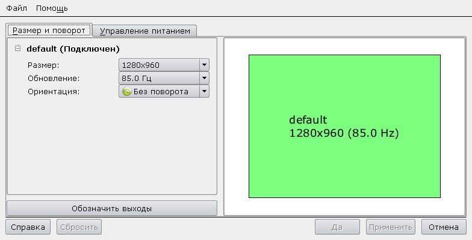
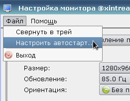
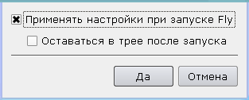

В Astra Linux сделан особый менеджер рабочего стола Fly DM, конфигурирование которого имеет различные тонкости, не отображенные в официальной документации.
Например, в разных версиях Astra Linux по-разному конфигурируется разрешение экрана рабочего стола, и метод, описанный в справочном центре проекта, не работает.
https://wiki.astralinux.ru/pages/viewpage.action?pageId=10387625
Здесь написана методика установки разрешения экрана рабочего стола для Astra Linux SE 1.3 (Smolensk).
Когда производится настройка разрешения экрана через GUI-диалог (Меню - Программы - Настройки - Настройка монитора), происходит две вещи.

Во-первых, изменяется пользовательский файл:
~/.config/rusbitech/fly-randr.conf
В нем прописывается нужный размер экрана в пикселях, а так же частота обновления монитора. Выглядит этот файл примерно так:
[Screen_0]
OutputsUnified=true
UnifiedRect=@Rect(0 0 0 0)
UnifiedRotation=6750318
Output_default\Active=true
Output_default\Rect=@Rect(0 0 1280 960)
Output_default\Rotation=1
Output_default\RefreshRate=85
[FlyGeometry]
screen=0
width=784
height=400
frame_width=784
frame_height=400
maximized=false
fullscreen=false
[Session]
1000157529230000000027320011\1575292300_655104\FlyGeometry\screen=0
1000157529230000000027320011\1575292300_655104\FlyGeometry\width=784
1000157529230000000027320011\1575292300_655104\FlyGeometry\height=400
1000157529230000000027320011\1575292300_655104\FlyGeometry\frame_width=784
1000157529230000000027320011\1575292300_655104\FlyGeometry\frame_height=400
1000157529230000000027320011\1575292300_655104\FlyGeometry\maximized=false
1000157529230000000027320011\1575292300_655104\FlyGeometry\fullscreen=false
При нажатии кнопки "Применить", новое разрешение будет сразу установлено, но не запомнено. Если перезагрузиться, то опять будет выставлено дефолтное разрешение экрана. Чтобы этого не происходило, надо в настройках монитора нажать Файл - Настроить автостарт:

И в появившемся окне надо выставить галку "Применять настройки при запуске Fly":

Что происходит при установке данной галки? В каталоге пользователя ~/.config/autostart будет создан файл:
~/.config/autostart/fly-randr.desktop
Содержимое файла примерно следующее:
[Desktop Entry]
Encoding=UTF-8
Name=Monitor settings
Name[ru]=Настройка монитора
Type=Application
NoDisplay=false
Comment=Resolution switch by using X Randr extension and DPMS settings
Comment[ru]=Переключение разрешений экрана с помощью X randr расширения и настройки энергосбережения
Exec=fly-randr --autostart --apply
Icon=display
Hidden=false
Terminal=false
StartupNotify=false
Categories=Settings;
OnlyShowIn=FLY;
X-SuSE-YaST-Group=Desktop
X-SuSE-YaST-RootOnly=false
Здесь интересна выполняемая команда:
fly-randr --autostart --apply
Эта команда считывает настройки из упомянутого выше файла fly-randr.conf, и выполнит системную утилиту xrandr, через которую в момент старта X11 (а точнее, после логина пользователя) будет выставлено нужное разрешение.
Зная, что происходит на "нижнем" уровне при настройке разрешения экрана, можно повторить эти действия просто на уровне файлов, не вызывая настроечные GUI-утилиты. Этот метод можно использовать, например, при автоматическом разворачивании настроек на нескольких рабочих станциях.